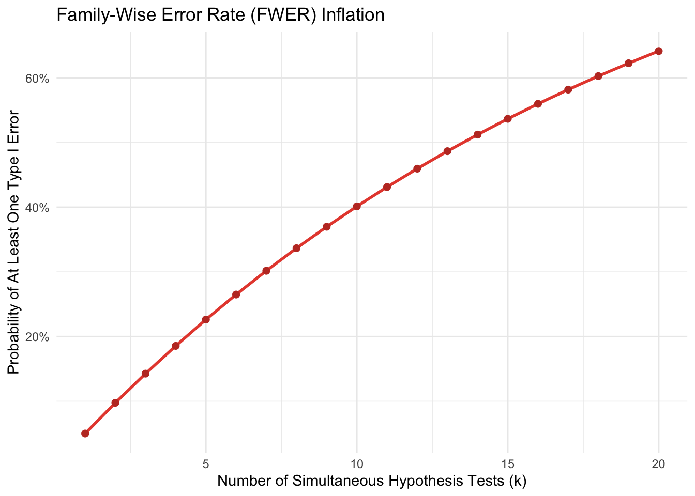
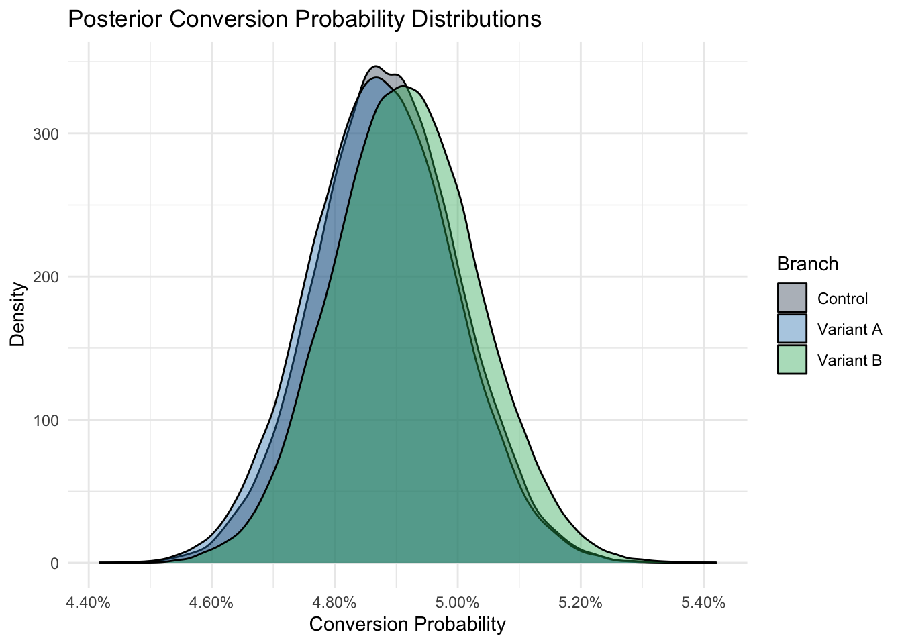
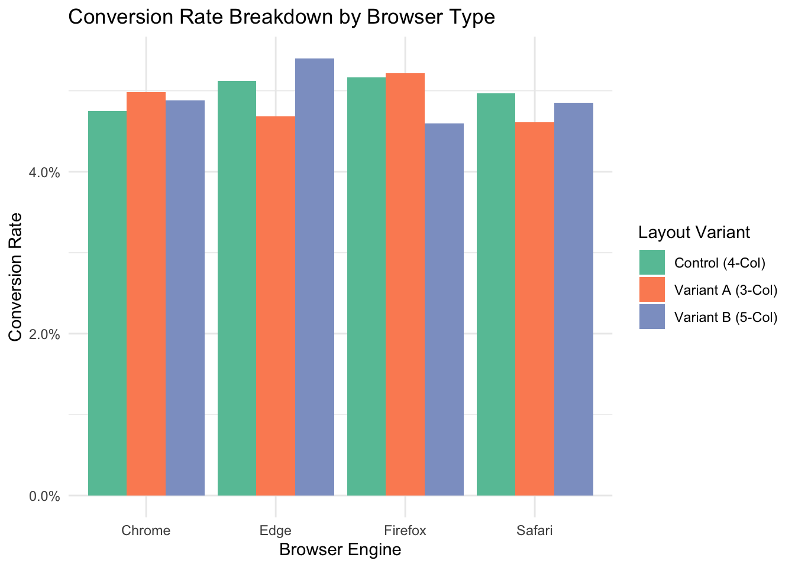

Overview
This project establishes an end-to-end statistical framework for
evaluating user-interface experiments in high-traffic e-commerce
environments. Using a synthetically generated
multi-variant A/B experiment that evaluates product grid display density
(Control: 4-column layout, Variant A: 3-column layout, Variant B:
5-column layout), we assess primary Key Performance Indicators (KPIs)
through both Frequentist and Bayesian
statistical paradigms.
Note on data: All data in this report is simulated.
The framework is intended to demonstrate a production-grade analysis
pipeline using only generic, self-generated datasets — no proprietary or
confidential data is used.
Key Insights
- Bayesian vs. Frequentist dynamics. Classical
Frequentist null-hypothesis significance testing (NHST) provides rigid
Type I error controls, while Bayesian inference delivers intuitive
probability statements (e.g., \(P(\text{Variant B} > \text{Control})\))
that align better with commercial decision-making under
uncertainty.
- KPI trade-offs. Optimizing for conversion rate
alone can be misleading if Average Order Value (AOV) is suppressed.
Revenue per Visitor (RPV) serves as the unifying composite metric.
- Heterogeneity & segmentation. Aggregate
experiment results often mask meaningful subgroup variance across
technical factors such as screen resolution, browser rendering engines,
and acquisition channels.
Experiment Setup & Data Simulation
To maintain strict data-privacy compliance while demonstrating a
realistic analysis pipeline, this project uses a synthetically generated
dataset modeling 100,000 unique user sessions across three
random-assignment branches.
set.seed(42)
n_sessions <- 100000
# Experiment allocation
variants <- c("Control (4-Col)", "Variant A (3-Col)", "Variant B (5-Col)")
alloc_prob <- c(0.34, 0.33, 0.33)
# Generate synthetic session records
experiment_data <- tibble(
visitor_id = sprintf("VIS-%06d", 1:n_sessions),
period = sample(1:5, size = n_sessions, replace = TRUE,
prob = c(0.2, 0.2, 0.2, 0.2, 0.2)),
variant = factor(sample(variants, size = n_sessions, replace = TRUE,
prob = alloc_prob), levels = variants),
browser = sample(c("Chrome", "Safari", "Edge", "Firefox"),
size = n_sessions, replace = TRUE,
prob = c(0.55, 0.25, 0.12, 0.08)),
screen_category = sample(c("Desktop Wide", "Desktop Standard"),
size = n_sessions, replace = TRUE,
prob = c(0.6, 0.4)),
channel = sample(c("Paid Search", "Organic Search", "Direct", "Paid Social"),
size = n_sessions, replace = TRUE,
prob = c(0.35, 0.30, 0.20, 0.15))
) %>%
mutate(
# True underlying probabilities for synthetic generation
base_cr = case_when(
variant == "Control (4-Col)" ~ 0.0490,
variant == "Variant A (3-Col)" ~ 0.0495,
variant == "Variant B (5-Col)" ~ 0.0505
),
converted = rbinom(n_sessions, 1, base_cr),
# Revenue follows a log-normal distribution for converted visits
revenue = if_else(
converted == 1,
rlnorm(n_sessions, meanlog = log(80), sdlog = 0.5),
0
)
)
# Preview aggregated metrics
experiment_summary <- experiment_data %>%
group_by(variant) %>%
summarize(
Visitors = n(),
Conversions = sum(converted),
Conversion_Rate = mean(converted),
Total_Revenue = sum(revenue),
AOV = sum(revenue) / sum(converted),
RPV = sum(revenue) / n(),
.groups = "drop"
)
kable(experiment_summary, digits = 4, caption = "Overall Sample KPI Overview") %>%
kable_styling(bootstrap_options = c("striped", "hover", "condensed"))
Overall Sample KPI Overview
|
variant
|
Visitors
|
Conversions
|
Conversion_Rate
|
Total_Revenue
|
AOV
|
RPV
|
|
Control (4-Col)
|
34183
|
1669
|
0.0488
|
150630.2
|
90.2518
|
4.4066
|
|
Variant A (3-Col)
|
32922
|
1604
|
0.0487
|
143691.4
|
89.5832
|
4.3646
|
|
Variant B (5-Col)
|
32895
|
1616
|
0.0491
|
145891.7
|
90.2795
|
4.4351
|
Primary Metrics Definition
E-commerce experiment analysis relies on two distinct classes of
KPIs:
1. Binary metrics (Conversion Rate):
\[\text{Conversion Rate (CR)} =
\frac{\text{Total Purchases}}{\text{Total Visitors}}\]
2. Non-binary / continuous metrics (AOV &
RPV):
\[\text{Average Order Value (AOV)} =
\frac{\text{Total Revenue}}{\text{Total Purchases}}\]
\[\text{Revenue per Visitor (RPV)} =
\frac{\text{Total Revenue}}{\text{Total Visitors}} = \text{CR} \times
\text{AOV}\]
Frequentist Analysis Pipeline
The classical Frequentist framework evaluates hypotheses under the
assumption of fixed parameter values and zero prior information.
1. Conversion Rate (\(\chi^2\) Test
of Independence)
- \(H_0\): Conversion likelihood is
independent of layout variant.
- \(H_1\): Layout variant influences
conversion likelihood.
cr_table <- table(experiment_data$variant, experiment_data$converted)
chisq_res <- chisq.test(cr_table)
chisq_res
##
## Pearson's Chi-squared test
##
## data: cr_table
## X-squared = 0.062636, df = 2, p-value = 0.9692
2. Average Order Value (Log-Normal ANOVA)
Because purchase amounts exhibit right-skewness, monetary values are
log-transformed prior to testing differences in means via Analysis of
Variance (ANOVA).
converted_data <- experiment_data %>%
filter(converted == 1) %>%
mutate(log_revenue = log(revenue))
aov_fit <- aov(log_revenue ~ variant, data = converted_data)
summary(aov_fit)
## Df Sum Sq Mean Sq F value Pr(>F)
## variant 2 0.1 0.03198 0.13 0.878
## Residuals 4886 1204.7 0.24656
3. Revenue per Visitor (Kruskal-Wallis Non-Parametric Test)
RPV contains a large zero-inflation spike due to non-converting
visitors. We apply the non-parametric Kruskal-Wallis test to evaluate
differences in distribution locations across variants.
kruskal.test(revenue ~ variant, data = experiment_data)
##
## Kruskal-Wallis rank sum test
##
## data: revenue by variant
## Kruskal-Wallis chi-squared = 0.07434, df = 2, p-value = 0.9635
Multiple Comparison Problem & Error Quantification
When conducting statistical tests across multiple variants or
subgroups, the probability of at least one false positive (Type I error)
inflates rapidly:
\[P(\text{At least 1 Type I Error}) = 1 -
(1 - \alpha)^k\]
where \(\alpha = 0.05\) and \(k\) is the number of comparative hypothesis
tests.
k_tests <- 1:20
fwer_inflation <- 1 - (1 - 0.05)^k_tests
tibble(Tests = k_tests, FWER = fwer_inflation) %>%
ggplot(aes(x = Tests, y = FWER)) +
geom_line(color = "#e74c3c", size = 1) +
geom_point(color = "#c0392b", size = 2) +
scale_y_continuous(labels = scales::percent) +
theme_minimal() +
labs(
title = "Family-Wise Error Rate (FWER) Inflation",
x = "Number of Simultaneous Hypothesis Tests (k)",
y = "Probability of At Least One Type I Error"
)
## Warning: Using `size` aesthetic for lines was deprecated
## in ggplot2 3.4.0.
## ℹ Please use `linewidth` instead.
## This warning is displayed once per session.
## Call `lifecycle::last_lifecycle_warnings()` to
## see where this warning was generated.

Multiple Testing Adjustments
To control for multi-variant and subgroup testing, we implement both
Holm-Bonferroni (FWER control) and Benjamini-Hochberg (False Discovery
Rate control) correction procedures:
raw_pvalues <- c(0.012, 0.038, 0.094, 0.150, 0.003, 0.220)
adjusted_table <- tibble(
Test = paste("Comparison", 1:length(raw_pvalues)),
Raw_P = raw_pvalues,
Holm_Adjusted = p.adjust(raw_pvalues, method = "holm"),
BH_FDR_Adjusted = p.adjust(raw_pvalues, method = "BH")
)
kable(adjusted_table, digits = 4, caption = "Comparison of P-Value Adjustment Methods") %>%
kable_styling(bootstrap_options = c("striped", "hover"))
Comparison of P-Value Adjustment Methods
|
Test
|
Raw_P
|
Holm_Adjusted
|
BH_FDR_Adjusted
|
|
Comparison 1
|
0.012
|
0.060
|
0.036
|
|
Comparison 2
|
0.038
|
0.152
|
0.076
|
|
Comparison 3
|
0.094
|
0.282
|
0.141
|
|
Comparison 4
|
0.150
|
0.300
|
0.180
|
|
Comparison 5
|
0.003
|
0.018
|
0.018
|
|
Comparison 6
|
0.220
|
0.300
|
0.220
|
Bayesian Analysis Pipeline
Bayesian experiment evaluation integrates prior beliefs with observed
experimental evidence (the likelihood) to produce posterior distribution
forecasts for decision parameters.
1. Bayesian Conversion Rate Modeling (Beta-Binomial Conjugate)
We model purchase conversion using a Beta prior \(\text{Beta}(\alpha, \beta)\) updated
sequentially through observed trial outcomes.
- Prior: Weakly informative prior centered at a
historical baseline conversion rate (\(\approx
5\%\)).
- Posterior update: \(\text{Beta}(\alpha + \text{Conversions},\ \beta +
\text{Non-Conversions})\).
# Prior formulation (weak prior)
alpha_prior <- 50
beta_prior <- 950
# Sequential Bayesian update
bayesian_cr <- experiment_data %>%
group_by(variant) %>%
summarize(
trials = n(),
successes = sum(converted),
alpha_post = alpha_prior + successes,
beta_post = beta_prior + (trials - successes),
mean_cr = alpha_post / (alpha_post + beta_post),
.groups = "drop"
)
# Posterior sampling to estimate probability to exceed Control
n_samples <- 50000
draws_control <- rbeta(n_samples, bayesian_cr$alpha_post[1], bayesian_cr$beta_post[1])
draws_variantA <- rbeta(n_samples, bayesian_cr$alpha_post[2], bayesian_cr$beta_post[2])
draws_variantB <- rbeta(n_samples, bayesian_cr$alpha_post[3], bayesian_cr$beta_post[3])
bayes_results <- tibble(
Comparison = c("Variant A vs. Control", "Variant B vs. Control"),
Prob_Beat_Control = c(
mean(draws_variantA > draws_control),
mean(draws_variantB > draws_control)
),
Expected_Relative_Lift = c(
mean((draws_variantA - draws_control) / draws_control),
mean((draws_variantB - draws_control) / draws_control)
)
)
kable(bayes_results, digits = 4, caption = "Bayesian Posterior Decision Metrics") %>%
kable_styling(bootstrap_options = c("striped", "hover"))
Bayesian Posterior Decision Metrics
|
Comparison
|
Prob_Beat_Control
|
Expected_Relative_Lift
|
|
Variant A vs. Control
|
0.4766
|
-0.0014
|
|
Variant B vs. Control
|
0.5685
|
0.0065
|
Visualizing Posterior Distributions
tibble(
Control = draws_control,
`Variant A` = draws_variantA,
`Variant B` = draws_variantB
) %>%
pivot_longer(cols = everything(), names_to = "Branch", values_to = "CR_Draw") %>%
ggplot(aes(x = CR_Draw, fill = Branch)) +
geom_density(alpha = 0.4) +
scale_x_continuous(labels = scales::percent_format(accuracy = 0.01)) +
theme_minimal() +
scale_fill_manual(values = c("#34495e", "#2980b9", "#27ae60")) +
labs(
title = "Posterior Conversion Probability Distributions",
x = "Conversion Probability",
y = "Density"
)

Post-Test Segmentation Analysis
To detect heterogeneous experiment effects, we break down outcomes
across technical user environments (browser type and screen
category).
segment_summary <- experiment_data %>%
group_by(browser, variant) %>%
summarize(
Visitors = n(),
Conversion_Rate = mean(converted),
RPV = sum(revenue) / n(),
.groups = "drop"
)
ggplot(segment_summary, aes(x = browser, y = Conversion_Rate, fill = variant)) +
geom_bar(stat = "identity", position = "dodge") +
scale_y_continuous(labels = scales::percent_format(accuracy = 0.1)) +
theme_minimal() +
scale_fill_brewer(palette = "Set2") +
labs(
title = "Conversion Rate Breakdown by Browser Type",
x = "Browser Engine",
y = "Conversion Rate",
fill = "Layout Variant"
)

Methodological Comparison & Conclusion
Frequentist vs. Bayesian Paradigms
|
Feature
|
Frequentist Paradigm
|
Bayesian Paradigm
|
|
Core Output
|
P(Data | H0) — p-value, confidence interval
|
P(Parameter | Data) — posterior probability distribution
|
|
Business Decision Metric
|
Reject / fail to reject the null hypothesis at alpha = 0.05
|
Probability a variant outperforms control (e.g., probability of positive
lift)
|
|
Handling Multi-testing
|
Explicit penalty algorithms (Holm, Benjamini-Hochberg)
|
Naturally regularized via prior parameters
|
|
Sample-Size Sensitivity
|
Fixed horizon required; prone to early-stopping bias
|
Supports continuous sequential evaluation
|
Strategic Recommendation
- Adopt Bayesian decision rules for execution speed.
For ongoing e-commerce iteration, the Bayesian paradigm provides
actionable probability statements without requiring strict fixed-horizon
experiment holds.
- Implement dual-KPI monitoring. Always pair
conversion-rate monitoring with average-order-value checks to prevent
unintended revenue degradation when increasing grid density or interface
element count.
Back to Projects Page